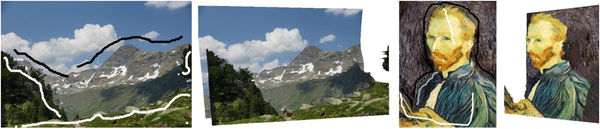

Satoshi Iizuka, Yuki Endo, Yoshihiro Kanamori, Jun Mitani, Yukio Fukui
University of Tsukuba
|  |
In this paper, we propose an interactive technique for constructing a 3D scene via sparse user inputs. We represent a 3D scene in the form of a Layered Depth Image (LDI) which is composed of a foreground layer and a background layer, and each layer has a corresponding texture and depth map. Given user-specified sparse depth inputs, depth maps are computed based on superpixels using interpolation with geodesic-distance weighting and an optimization framework. This computation is done immediately, which allows the user to edit the LDI interactively. Additionally, our technique automatically estimates depth and texture in occluded regions using the depth discontinuity. In our interface, the user paints strokes on the 3D model directly. The drawn strokes serve as 3D handles with which the user can pull out or push the 3D surface easily and intuitively with real-time feedback. We show our technique enables efficient modeling of LDI that produce sufficient 3D effects.